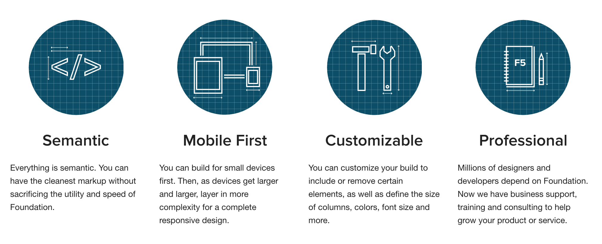

SASS
Syntaxis Básica
Comentarios
Los comentarios que hagas en un archivo .scss con dos barras inclinadas no aparecerán en el CSS resultante. Esto es muy útil para comentarios que no quieres que aparezcan en el CSS final.
// Este comentario no saldrá
/* Este comentario sí saldrá*/
body {
font: {
family: Arial, sans-serif;
size: 100$;
weight: normal;
}
}
Importando en SASS
El uso de @import es diferente en Sass que en CSS. En una hoja de estilos CSS supone una nueva llamada al servidor para cargar otra hoja de estilos y esperar a que se cargue para aplicar los nuevos estilos (razón por la cual se usa poco), por ejemplo supongamos que tenemos dentro de nuestro css:
/*
* Importamos los estilos de menu.css
*/
@import "menu.css";
Ejemplo
Creamos un archivo _menu.scss en nuestro directorio SASS
.menu {
margin: 0;
padding: 0;
list-style-type: none;
}
.menu > li {
display: inline-block;
margin: 0 0 10px 10px;
}
Y lo importamos en nuestro archivo principal
// Importamos los estilos de menu.scss
// cuando simpore compile main.scss
@import "menu";
Anidación de Selectores
Suponiendo el siguiente codigo CSS
.contenido {
width: 300px;
background: #eaeaea;
}
.contenido h2 {
font-size: 18px;
}
.contenido p {
font-size: 14px
En SASS
En sass seria
.contenido {
width: 300px;
background: #eaeaea;
h2 {
font-size: 18px;
}
p {
font-size: 14px;
}
}
Selector Padre
Cuando estamos anidando el símbolo & se comporta igual que un comodín, y se refiere siempre al selector “padre”. Por ejemplo:
.contenido {
border: 1px solid #999;
padding: 10px;
a {
text-decoration: underline;
&:hover {
color: green;
}
}
La anidación es una herramienta potente, pero sobreexplotarla lleva a escribir CSS con demasiada especificidad, lo que no se recomienda. Trata de mantener 3 niveles como maximo de anidacion

Mixins
Los Mixins te permiten reutilizar estilos (propiedades e incluso selectores) sin tener que copiarlos y pegarlos cada vez que quieres utilizarlos.
Teniendo el siguiente codigo
.btn-a {
background: blue;
color: white;
width: 30px;
border-radius: 10px;
}
.btn-b {
background: black;
color: white;
width: 30px;
border-radius: 10px;
}
Como vemos, todo se repite salvo el color de fondo. Este es un ejemplo de repetición de código que probablemente queramos evitar en nuestra hoja .scss, y lo podemos hacer gracias a los Mixin
Creando nuestro primer mixin
Para escribir un Mixin lo hacemos escribiendo @Mixin seguido por el nombre del mismo. Por ejemplo, para el caso anterior, escribiríamos en el Mixin las propiedades que repetíamos. Y luego en cada botón incluimos el Mixin con @include:
/* style.scss */
@Mixin botones {
color: white;
width: 30px;
border-radius: 10px;
}
.btn-a {
@include botones;
background: blue;
}
.btn-b {
@include botones;
background: black;
}
Tener en cuenta:
- Como regla general está bien escribir primero el @include y luego poner las propiedades singulares (como background: black;) para poder sobreescribir alguna de las que nos trae el Mixin si fuera necesario.
- Asegúrate que el @Mixin está declarado antes de usar los @include. Por ejemplo, puedes crear un parcial (partial) que se llame _mixins.scss y lo importamos antes del resto de parciales (puedes ver qué es un parcial en Sass: Comentarios, Importaciones y Anidación)
- @include no es lo mismo que @import. Con @include incluimos un mixin, mientras que con @import incluimos un archivo. En el mismo artículo que el punto anterior verás el uso de @import.
Mixins con Parametros
El poder real de los Mixins está en que podemos pasar argumentos a los mismos. Los argumentos se declaran como una lista de variables dentro de un paréntesis. A cada una de estas variables se le asigna un valor cada vez que se usa el mixin. De esta manera no generaremos código repetido cada vez que lo usemos, ya que gracias a los argumentos podemos obtener un código singular para cada caso.
Ejemplo
@mixin rounded($radio) {
border-radius: $radio;
-moz-border-radius: $radio;
-webkit-border-radius: $radio;
}
#footer { @include rounded(5px); }
#sidebar { @include rounded(8px); }
Aplicando el mixin
#footer {
border-radius: 5px;
-moz-border-radius: 5px;
-webkit-border-radius: 5px; }
#sidebar {
border-radius: 8px;
-moz-border-radius: 8px;
-webkit-border-radius: 8px; }
A los argumentos del mixin se les puede dar también un valor por defecto, de tal manera que si al usar el Mixin no se pasa ese argumento, se le asignará el valor por defecto. Si queremos incluir un valor por defecto en el ejemplo anterior, haríamos:
@mixin rounded($radio: 10px)) {
border-radius: $radio;
-moz-border-radius: $radio;
-webkit-border-radius: $radio;
}
#navbar li { @include rounded; }
#footer { @include rounded(5px); }
#sidebar { @include rounded(8px); }
El uso de Mixins es tan potente que encontraréis librerías, páginas web y artículos de blogs dedicados exclusivamente a compartir Mixins
Variables
Las variables en SASS se escriben con el prefijo $. Esta variable será posible de utilizar a lo largo de nuestro documento scss o en otros documentos con la etiqueta @import
$colortipografia: #333;
p{
text-align:center;
color: $colortipografia;
}
Podemos crear, por ejemplo, un archivo que podemos llamar _configuracion.scss donde pueden estar nuestras variables e importarlo, almacenando asi las variables en un solo archivo y facilitando la mantención del codigo.
Tipos de Valores en Variables SASS
Algunos valores que pueden almacenar las variables
// Booleano
$sombra: true;
$borde: false;
// Números, con o sin unidades
$margen: 4px;
$font-size: 3rem;
$line-height: 1.5;
// Cadenas de texto,con o sin comillas
$principal: Georgia;
$fuente: 'Helvetica Neue';
$mensaje: "Cargando...";
// Listas
$nombres: Juan, Luis, María;
$margin: 10px 10px 0 20px;
// Null, se usan sobre todo en condicionales
$bordes: null;
Variables ¿Globales?
Si definimos una variable fuera de cualquier declaración de estilos, esta variable y su valor estarán disponibles de forma global. Pero, ¿qué sucede si definimos una variable dentro de una declaración como por ejemplo:
.contenido {
p {
$color: #999;
color: $color;
}
}
.lateral {
color: $color;
}
¿Y qué sucede si tenemos una variable global y luego cambiamos su valor dentro de una declaración?
$color: black;
.contenido {
p {
$color: #999;
color: $color;
}
}
CV reloaded
Crea una nueva versión de tu CV, usando las siguientes propiedades y herramientas
- Sass y Compass
- Variables
- Al menos 1 mixin
- Animaciones y Transiciones
- WebFonts
- Herencia
Ejemplo: Codepen
PD: usa box-sizing: border-box en tus cajas
Extend
@extend extiende las propiedades de un selector declarado anteriormente al selector en el cual se utiliza, por ejemplo
.estilo{
color:red;
border-radius:10px;
}
.boton{
@extend .estilo;
}
CSS3 con Compass
Para usar los mixins de propiedades CSS3 y hacerlas crossbrowser, utilizando compass, utilizamos
@import "compass/css3";
Colores en SASS
rgba()
En CSS3 las propiedades para crear un color en rgba ( Red, Green, Blue, Alpha) es
.caja{
background-color: rgba(215, 40, 40, 0.9);
}
Como generalmente en CSS usamos colores con sus valores hexadecimales... o variables, en sass tenemos:
$color: #333;
.caja{
background-color: rgba($color, .5);
background-color: rgba(#333, .5);
}
Variantes de Color
En SASS a los valores hexadecimales (o variables) podemos sumarle o restarle unidades para modificar los colores que representan. Por Ej:
$colorprincipal:red;
.caja{
background-color:$colorprincipal - 30;
}
Oscurecer y Aclarar
Esta funcion ajusta la luminosidad de los colores, usando un % de variación entre 0 y 100
$colorprincipal:red;
.caja{
darken( $colorprincipal, 10% );
lighten( $colorprincipal, 10% );
}
Saturar y Desaturar
Esta funcion ajusta la saturación de los colores, usando un % de variación entre 0 y 100
$colorprincipal:red;
.caja{
saturate( $colorprincipal, 20% )
desaturate( $colorprincipal, 20% )
}
Una guía con todas las funciones de color la encuentran en
http://sass-lang.com/documentation/Sass/Script/Functions.htmlFunción Border-Radius
Para hacer bordes redondeados en Compass, contamos con la funcion border radius
.simple { @include border-radius(4px, 4px); }
.compound { @include border-radius(2px 5px, 3px 6px); }
.crazy { @include border-radius(1px 3px 5px 7px, 2px 4px 6px 8px)}
Degradados
Generar un degradado en CSS es algo asi
background: rgba(212,228,239,1);
background: -moz-linear-gradient(left, rgba(212,228,239,1) 0%, rgba(134,174,204,1) 100%);
background: -webkit-gradient(left top, right top, color-stop(0%, rgba(212,228,239,1)), color-stop(100%, rgba(134,174,204,1)));
background: -webkit-linear-gradient(left, rgba(212,228,239,1) 0%, rgba(134,174,204,1) 100%);
background: -o-linear-gradient(left, rgba(212,228,239,1) 0%, rgba(134,174,204,1) 100%);
background: -ms-linear-gradient(left, rgba(212,228,239,1) 0%, rgba(134,174,204,1) 100%);
background: linear-gradient(to right, rgba(212,228,239,1) 0%, rgba(134,174,204,1) 100%);
Pero existe compass
#radial-gradient {
@include background-image(radial-gradient(45px 45px, cyan 10px, dodgerblue 30px));
}
#linear-gradient {
@include background-image(linear-gradient(to bottom right, white, #dddddd));
}
#v-gradient {
@include background-image(linear-gradient(white, #aaaaaa));
}
Box Shadow
Para generar una sombra a una caja en SASS
#box-shadow-default {
@include single-box-shadow;
}
#box-shadow-custom {
@include box-shadow(red 2px 2px 10px);
}
#box-shadow-custom-multiple {
@include box-shadow(rgba(blue, 0.4) 0 0 25px, rgba(green, 0.2) 0 0 3px 1px inset);
}
Text Shadow
.has-custom-shadow {
@include text-shadow(rgba(blue, 0.2) 1px 1px 0);
}
Ejercicio
Crea una ventana modal como la del ejemplo
http://codepen.io/anon/pen/BNbMEe?editors=001Diseño Web Responsive
Media Queries
Las Media queries consisten de un media type y una o mas expresiones, implicando características del medio, la cual se resuelve como verdadera o falsa. El resultado de la consulta es verdadera si el tipo de medio especificado en el media query concuerda con el tipo de dispositivo que está siendo mostrado y todas las expresiones en el media query son verdaderas.
@media (max-width: 600px) {
.facet_sidebar {
display: none; /* Esto ocultaria un elemnto */
}
}
Cuando una media query es verdadera, la hoja de estilo correspondiente o reglas de estilos son aplicadas, siguiendo las reglas normales de cascada.
Usando Media Queries en Sass
$break-small: 320px;
$break-large: 1200px;
.profile-pic {
float: left;
width: 250px;
@media screen and (max-width: $break-small) {
width: 100px;
float: none;
}
@media screen and (min-width: $break-large) {
float: right;
}
}
Ejercicio CV RESPONSIVE!
Modifica tu CV haciendolo responsive y modificandolo para que en dispositivos moviles se vea asi
http://codepen.io/anon/pen/KpEEYX?editors=011Foundation
Olviden todo lo que aprendieron (broma)Que es?
Foundation
Instalando Foundation y el Cli
Debemos seguir los pasos en:
http://foundation.zurb.com/docs/sass.htmlEstructura de Proyecto Foundation
Configurando nuestro proyecto
Foundation esta escrito modularmente, por lo que en la carpeta scss encontraremos el archivo _settings.scss que controla los aspectos visuales de foundation
app.scss .. Foundation es esteroides para la web
Foundation viene cargado de elementos prediseñados y optimizados para las tareas mas rutinarias de diseño web
- Grillas
- Sliders
- Formularios
- Menús
- MediaQueries
- Y Mas....
Grillas
Filas
Lo primero será crear una fila, una fila es el elemento básico de Foundation, dentro de una fila puedes dividir la grilla en 12 segmentos (configurable)
<div class="row">
<!-- Soy una fila -->
</div>
Columnas
Foundation trae predeterminadamente 12 columnas, las que puedes utilizar para combinarlas y crear un layout para tu web. Las columnas tienen 3 variantes de grilla
- Grilla Small (Mobile First)
- Grilla Medium
- Grilla Large
Distribución de Columnas
Supongamos que queremos crear una fila, con 3 columnas, cada una de ellas con 1/3 del tamaño de la fila
<div class="row">
<div class="large-4 columns panel">...</div>
<div class="large-4 columns panel">...</div>
<div class="large-4 columns panel">...</div>
</div>
Ejercicio
Recrea el layout de BCI.cl usando foundation

Foundation es Mobile first, asi que por ejemplo a las mismas columnas podemos especificarles un comportamiento para grillas Small y Medium
<div class="row">
<div class="large-4 medium-8 small-6 columns panel"></div>
<div class="large-4 medium-4 small-6 columns panel"></div>
<div class="large-4 medium-12 small-12 columns panel"></div>
</div>
Ejercicio
Transforma el ejercicio de BCI.cl a responsive
Offset
Mueve la columna X posiciones hacia la derecha
<div class="row">
<div class="large-10 columns large-offset-1"></div>
</div>
Filas Colapsadas
Para eliminar el padding entre columnas
<div class="row">
<div class="large-6 columns panel"></div>
<div class="large-6 columns panel"></div>
</div>
Columnas Centradas
Para centrar una columna que no ocupa el ancho total, usamos large-centered, small-centered y medium-centered. Si queremos que este centrada solo en un tamaño especifico
<div class="row">
<div class="small-6 large-centered columns">6 centered</div>
</div>
Visibility
Mostrar en determinados tamaños
<p class="panel">
<strong class="show-for-small-only">This text is shown only on a small screen.</strong>
<strong class="show-for-medium-up">This text is shown on medium screens and up.</strong>
<strong class="show-for-medium-only">This text is shown only on a medium screen.</strong>
<strong class="show-for-large-up">This text is shown on large screens and up.</strong>
<strong class="show-for-large-only">This text is shown only on a large screen.</strong>
<strong class="show-for-xlarge-up">This text is shown on xlarge screens and up.</strong>
<strong class="show-for-xlarge-only">This text is shown only on an xlarge screen.</strong>
<strong class="show-for-xxlarge-up">This text is shown on xxlarge screens and up.</strong>
</p>
Visibility
Ocultar para determinados tamaños
<p class="panel">
<strong class="hide-for-small-only">You are <em>not</em> on a small screen.</strong>
<strong class="hide-for-medium-up">You are <em>not</em> on a medium, large, xlarge, or xxlarge screen.</strong>
<strong class="hide-for-medium-only">You are <em>not</em> on a medium screen.</strong>
<strong class="hide-for-large-up">You are <em>not</em> on a large, xlarge, or xxlarge screen.</strong>
<strong class="hide-for-large-only">You are <em>not</em> on a large screen.</strong>
<strong class="hide-for-xlarge-up">You are <em>not</em> on an xlarge screen and up.</strong>
<strong class="hide-for-xlarge-only">You are <em>not</em> on an xlarge screen.</strong>
<strong class="hide-for-xxlarge-up">You are <em>not</em> on an xxlarge screen.</strong>
</p>
Blockgrid
El elemento blockgrid divide el contenido en la cantidad de elementos que le señalas, es ideal para galerias de imagenes o catalogos
<ul class="small-block-grid-3">
<li><img src="http://fakeimg.pl/350x200/00CED1/FFF/?text=img+placeholder"></li>
<li><img src="http://fakeimg.pl/350x200/00CED1/FFF/?text=img+placeholder"></li>
<li><img src="http://fakeimg.pl/350x200/00CED1/FFF/?text=img+placeholder"></li>
</ul>